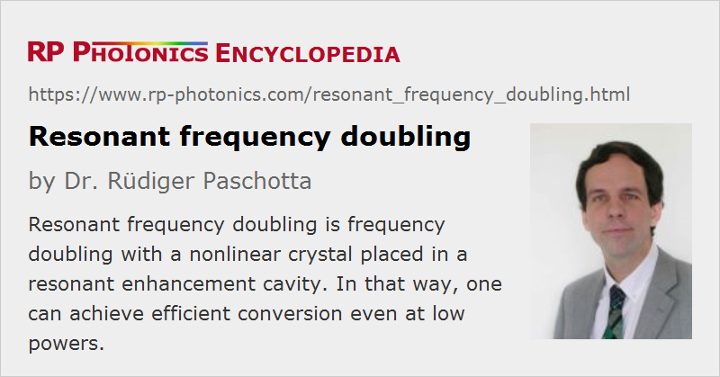

Resonant Frequency Doubling
Definition: frequency doubling with a nonlinear crystal placed in a resonant enhancement cavity
More general term: frequency doubling
German: resonante Frequenzverdopplung
Categories: optical resonators, nonlinear optics, methods
How to cite the article; suggest additional literature
Author: Dr. Rüdiger Paschotta
Frequency doubling (second-harmonic generation) in a nonlinear crystal often cannot be made very efficient with a single pass through the nonlinear crystal, if the available pump power is relatively low, or if sufficiently high optical intensities can not be applied due to the low damage threshold of the crystal material. A frequently used technique for boosting the conversion efficiency in such cases is resonant frequency doubling, i.e. the placement of the nonlinear crystal within a resonant enhancement cavity.
Singly and Doubly Resonant Frequency Doubling
There are actually three versions of resonant frequency doubling:
- Singly-resonant frequency doubling is usually based on the resonant enhancement of the pump wave only, whereas the second-harmonic wave is strongly coupled out of the resonator. The resonant pump enhancement increases the conversion efficiency in each pass. Also note that a very high effective conversion efficiency requires a conversion efficiency of only a few percent per pass, because the remaining pump power is recycled in the laser resonator [7]. This also means that the pump intensity can be kept at a lower level than would be required for achieving the same efficiency in single-pass doubling.
- Alternatively, the cavity may be resonant for the second-harmonic wave only. It may be somewhat surprising that this helps, but looking in detail at the parametric interaction shows that its conversion efficiency depends not only on the pump power but also on the second-harmonic power, which can be boosted with this method.
- For very low pump powers, the highest conversion efficiencies can be achieved with doubly resonant frequency doubling, where the pump wave and the second-harmonic wave are simultaneously resonant in the cavity [8]. However, it is more delicate to achieve and stabilize this double resonance. Two independent control parameters, such as the crystal temperature and the resonator length, are required.
All these techniques were discussed in the seminal paper by Boyd and Kleinman in 1968 [2].
Most frequently, one uses singly resonant doublers, being resonant for the pump light.
Stabilization of Resonance
Usually, the pump light is generated with a single-frequency laser. One needs to ensure that the frequency of the pump light remains in resonance during operation. As the resonance would easily be lost e.g. through thermal drifts of the resonator length, one usually requires some kind of automatic stabilization with a feedback system. That system must detect any deviations from resonance, e.g. using the Hänsch–Couillaud method [3] or the Pound–Drever–Hall technique [4, 5]. It can correct any deviations either by fine-tuning the laser frequency or by modifying the resonator length, e.g. with a piezo transducer below a resonator mirror.
Mode Matching
In addition to maintaining the residence condition concerning the optical frequency, one requires mode matching of the pump light to the resonator. One normally uses a Gaussian laser beam, which can well be matched to the fundamental mode of the resonator, using some suitable optical elements – for example a lens and two steering mirrors.
Resonator Designs
It is common to use a ring resonator as shown in Figure 1:
The lower left mirror should partially transmit incident pump light, while the other mirrors should be fully reflecting for pump light. The lower right mirror should fully couple out of the frequency-doubled light.
The highest conversion efficiency is achieved with impedance matching, where any reflection of incident pump light is avoided. For that, the transmission of the pump input must match the sum of all other losses for pump light, including the nonlinear conversion. As the single-pass conversion efficiency depends on the power level, the conversion efficiency is usually maximized for a certain power level and then drops for further increases in pump power. If impedance matching is achieved and the nonlinear losses for the pump wave dominate over parasitic linear losses, the overall conversion efficiency can be very high (sometimes >80%) – even at moderate optical intensities within the crystal.
For highest conversion efficiencies, one needs to minimize parasitic losses in the resonator. For example, one can realize a monolithic resonator as shown in Figure 2, with dielectric mirror coatings on both sides of the nonlinear crystal. For example, the left mirror may be partially transmissive for pump light and fully reflective for frequency-doubled light, while the right mirror is fully reflective for pump light and fully transmissive for frequency-doubled light. A similar setup has provided 82% conversion efficiency despite a low input power level around 100 mW [7].
Such a monolithic resonant doubler is most stable, compact and efficient, but somewhat difficult to characterize, since the different parts (nonlinearity, mirror reflectivities) cannot be tested separately.
In any case, the resonance condition has to be stabilized with an automatic feedback system, acting, e.g., on the length of the laser resonator or the doubling cavity.
Frequency Doubling of Ultrashort Pulses
Resonant doubling is also applicable to trains of ultrashort pulses from mode-locked lasers. In that case, the cavity has to be simultaneously resonant for all the lines of the optical spectrum of the pulse train, which is a frequency comb. Normally, the cavity is chosen to have the same optical length as the laser resonator.
Resonator Sum and Difference Frequency Generation
In similar forms, resonant nonlinear frequency conversion can be applied to other nonlinear processes such as sum and difference frequency generation. It is in principle also possible to use resonant enhancement of the pump wave of an optical parametric oscillator, but this is rarely used.
Intracavity Frequency Doubling
An interesting alternative to resonant doubling is intracavity frequency doubling. The crucial difference is that intracavity doubling automatically provides a resonant pump wave; no active frequency stabilization is required. It is also then not mandatory to achieve single frequency operation.
Although one usually uses either resonant doubling or intracavity doubling, Ref. [9] demonstrates the combination of both techniques. Here, the frequency-doubling resonator has been placed within the laser resonator of a fiber laser.
Questions and Comments from Users
Here you can submit questions and comments. As far as they get accepted by the author, they will appear above this paragraph together with the author’s answer. The author will decide on acceptance based on certain criteria. Essentially, the issue must be of sufficiently broad interest.
Please do not enter personal data here; we would otherwise delete it soon. (See also our privacy declaration.) If you wish to receive personal feedback or consultancy from the author, please contact him e.g. via e-mail.
By submitting the information, you give your consent to the potential publication of your inputs on our website according to our rules. (If you later retract your consent, we will delete those inputs.) As your inputs are first reviewed by the author, they may be published with some delay.
Bibliography
| [1] | A. Ashkin, G. D. Boyd, and J. M. Dziedzic, “Optical second harmonic generation and mixing”, IEEE J. Quantum Electron. 2 (6), 109 (1966), doi:10.1109/JQE.1966.1074007 |
| [2] | G. D. Boyd and D. A. Kleinman, “Parametric interaction of focused Gaussian light beams”, J. Appl. Phys. 39 (8), 3597 (1968), doi:10.1063/1.1656831 |
| [3] | T. W. Hänsch and B. Couillaud, “Laser frequency stabilization by polarization spectroscopy of a reflecting reference cavity”, Opt. Commun. 35 (3), 441 (1980) (Hänsch–Couillaud technique), doi:10.1016/0030-4018(80)90069-3 |
| [4] | R. W. P. Drever, J. L. Hall et al., “Laser phase and frequency stabilization using an optical resonator”, Appl. Phys. B 31, 97 (1983), doi:10.1007/BF00702605 |
| [5] | G. C. Bjorklund et al., “Frequency-modulation (FM) spectroscopy”, Appl. Phys. B 32 (3), 145 (1983), doi:10.1007/BF00688820 |
| [6] | Z. Y. Ou et al., “85% efficiency for cw frequency doubling from 1.08 to 0.54 μm”, Opt. Lett. 17 (9), 640 (1992), doi:10.1364/OL.17.000640 |
| [7] | R. Paschotta et al., “82% efficient continuous-wave frequency doubling of 1.06 μm with a monolithic MgO:LiNbO3 resonator”, Opt. Lett. 19 (17), 1325 (1994), doi:10.1364/OL.19.001325 |
| [8] | K. Fiedler et al., “Highly efficient frequency doubling with a doubly-resonant monolithic total internal reflection ring resonator”, Opt. Lett. 18 (21), 1786 (1993), doi:10.1364/OL.18.001786 |
| [9] | R. Cieslak and W. A. Clarkson, “Internal resonantly enhanced frequency doubling of continuous-wave fiber lasers”, Opt. Lett. 36 (10), 1896 (2011), doi:10.1364/OL.36.001896 |
| [10] | S. Ast et al., “High-efficiency frequency doubling of continuous-wave laser light”, Opt. Lett. 36 (17), 3467 (2011), doi:10.1364/OL.36.003467 |
| [11] | U. Eismann et al., “Active and passive stabilization of a high-power UV frequency-doubled diode laser”, arXiv:1606.07670v1 (2016) |
See also: frequency doubling, enhancement cavities, intracavity frequency doubling, nonlinear frequency conversion, The Photonics Spotlight 2006-08-15
and other articles in the categories optical resonators, nonlinear optics, methods
|  |
If you like this page, please share the link with your friends and colleagues, e.g. via social media:
These sharing buttons are implemented in a privacy-friendly way!